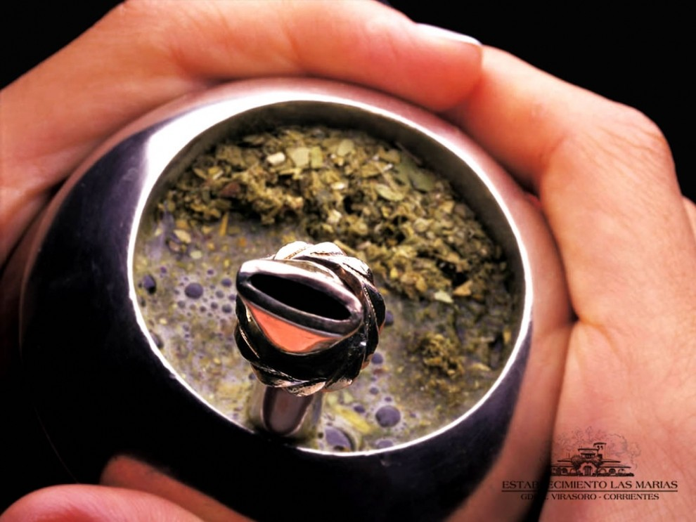
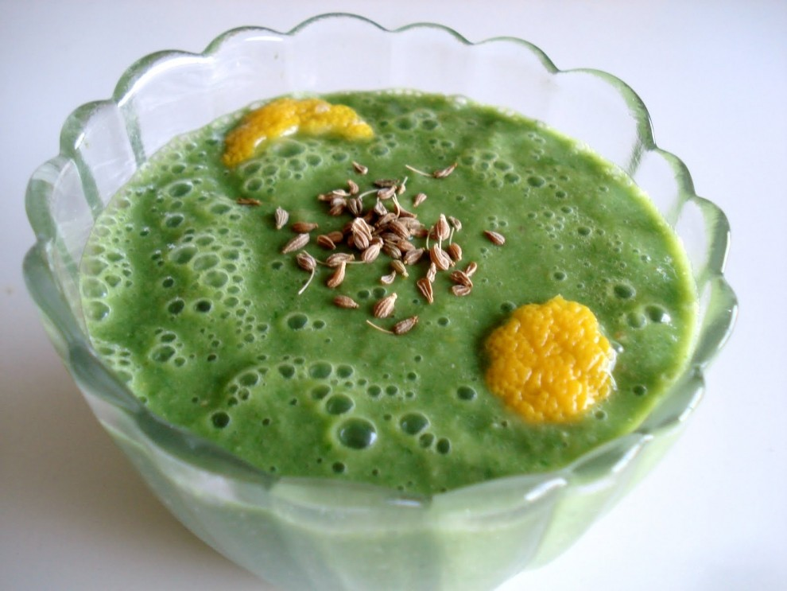
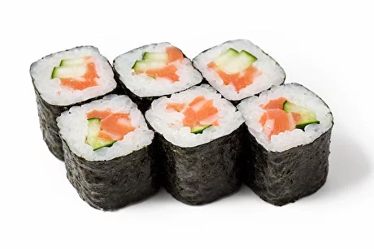

|  |
МакидзусиМакидзуси - это разновидность суши, представляющая собой рулет из водорослей нори, риса и разнообразных начинок, завернутых в длинный цилиндр. Рулет затем нарезается на небольшие кусочки, создавая красочные и вкусные роллы суши. Макидзуси может содержать различные начинки, такие как рыба, овощи, морепродукты и даже фрукты. |
|  |
АоджируАоджиру - это зеленый напиток, который популярен в Японии как здоровый и питательный. Он обычно приготавливается из различных зеленых растений и включает в себя ингредиенты, такие как листья ячменя, шпинат, спирулина и другие зеленые продукты. Аоджиру обогащен витаминами и минералами и часто употребляется как дополнение к рациону для повышения общего благополучия. |
|  |
МатчаМатча - это японский зеленый чай, изготавливаемый из молотого порошка листьев чайного куста. Этот чай имеет интенсивный зеленый цвет и яркий вкус. Он широко используется в чайной церемонии в Японии и также может быть использован для приготовления различных сладостей и напитков. Матча обладает богатым ароматом и содержит антиоксиданты, что делает его популярным выбором для тех, кто стремится к здоровому образу жизни. |